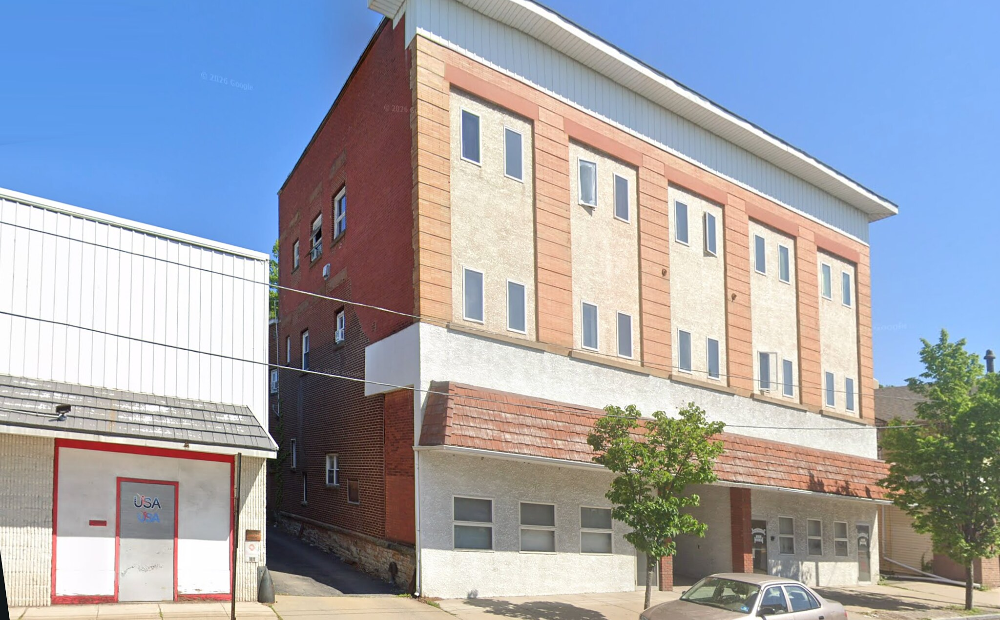
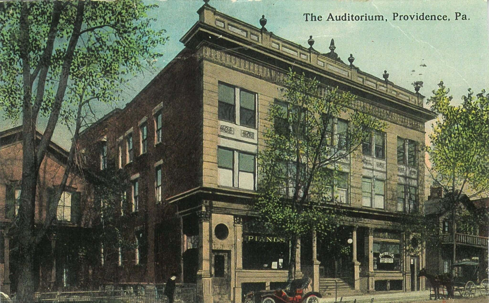

Scranton, Pennsylvania · Then & Now
The Auditorium,
Providence, Pa.
The building still holds its corner, three storeys on the same footprint. The cornice and its row of stone urns are gone, and the brick and terracotta have disappeared under stucco and metal panel. The shape survived. The surface did not.
c. 1910
Today


Drag to compare · arrow keys to scrub
ThenPostcard, “The Auditorium, Providence, Pa.” Publisher unknown; dated from the vehicles at the kerb.
NowGoogle Street View, captured May 2026. Imagery © Google.
On the fitThe modern frame was shot closer and wider than the postcard, so this pair is corrected for perspective rather than simply cropped. The building’s four corners match; the re-clad surfaces between them do not.